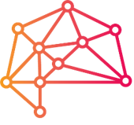

<mat-toolbar class="navbar">
  <mat-toolbar-row class="options">
    <div class="logoSyn">
      <!--
      
      -->
      <h1>SYN</h1>
    </div>

    <span class="example-spacer"></span>

    <button mat-button [routerLink]="'/home'" routerLinkActive="active">
      {{ "HOME" | translate }}
    </button>
    <button mat-button [routerLink]="'/metrics'" routerLinkActive="active">
      {{ "METRICS" | translate }}
    </button>
    <button mat-button [routerLink]="'/dashboard'" routerLinkActive="active">
      {{ "DASHBOARD" | translate }}
    </button>
    <button
      mat-button
      [routerLink]="'/aggregated-metrics'"
      routerLinkActive="active"
    >
      {{ "AGGREGATED-METRICS" | translate }}
    </button>

    <div class="logoNavbar clickable">
      
    </div>
  </mat-toolbar-row>
</mat-toolbar>
